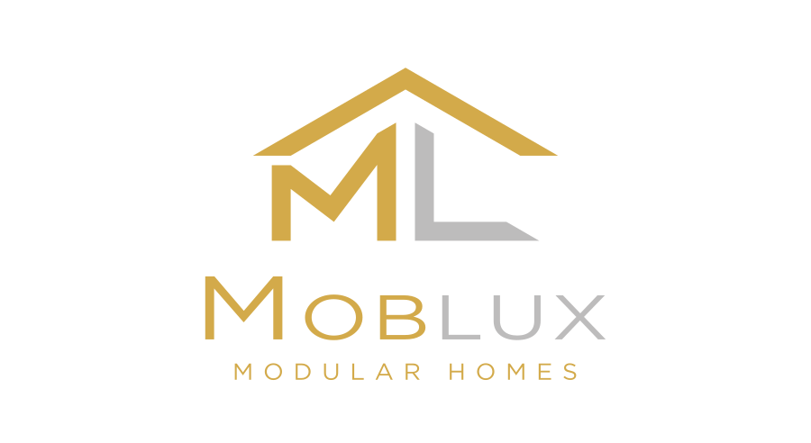

Adatok bekérése
Település, cím vagy helyrajzi szám, a választott modell és a tervezett használat.

Ellenőrzést kérek ↗MOBLUX TELEPÍTÉSI SZOLGÁLTATÁS
A helyrajzi szám alapú előzetes vizsgálattól az országos szállításon és daruzáson át a szakszerű helyszíni telepítésig összehangoljuk a teljes folyamatot.
NEM MARAD EGYEDÜL A FOLYAMATBAN
Egy kapcsolattartással, egymásra épülő szakmai lépésekben haladunk.
Település, cím vagy helyrajzi szám, a választott modell és a tervezett használat.
Övezeti besorolás, beépíthetőség, épületmagasság, elhelyezési távolságok és településkép áttekintése.
Megmutatjuk, melyik méret, kialakítás és telepítési mód illeszthető az ingatlanhoz.
Igény esetén megszervezzük a szükséges tervezői dokumentációt és az önkormányzati vagy hatósági egyeztetést.
Megtervezzük az útvonalat, a helyszíni megközelítést, a beemelést és a biztonságos lehelyezést.
A ház összeállítása, rögzítése és a vállalt helyszíni munkák összehangolt elvégzése.
EGYÜTTMŰKÖDŐ PARTNERÜNK
A MOBLUX mobilházak országos szállítását, daruzását és helyszíni mozgatását tapasztalt együttműködő partnerünkkel, a Nyisztor Daru Kft.-vel összehangolva végezzük. A jármű, az emelési feladat és a telepítési helyszín előzetes felmérése egyaránt a biztonságos kivitelezést szolgálja.
Nyisztor Daru Kft. weboldala ↗JOGSZABÁLYI HÁTTÉR
Nem általános ígéretet adunk, hanem az adott ingatlanra vonatkozó előírásokat vizsgáljuk meg.
Meghatározza az egyszerű bejelentés és az építési engedély alapján végezhető építési tevékenységek körét, köztük a 35 m²-es és 4,5 méteres küszöböt.
Hivatalos jogszabály ↗Az országos településrendezési és építési követelmények alapját adja; a helyi szabályokkal együtt alkalmazandó.
Hivatalos jogszabály ↗A telek övezete határozhatja meg többek között a rendeltetést, a beépítettséget, a zöldfelületet, az épületmagasságot és az elhelyezést.
Hivatalos tájékoztató ↗A weboldalon szereplő információ általános tájékoztatás. A szükséges eljárásról minden esetben a konkrét ingatlan, a tervezett rendeltetés és a hatályos helyi előírások alapján lehet felelős álláspontot adni.
HELYRAJZI SZÁM ELLENŐRZÉSE
Két gyors út ugyanahhoz a célhoz: tisztább kép még a ház kiválasztása és a telepítés megtervezése előtt.
KÜLDJE EL NEKÜNK A HRSZ-T
Küldje el az ingatlan alapadatait. Ezek alapján felvesszük Önnel a kapcsolatot, és elindítjuk az előzetes telepíthetőségi egyeztetést.